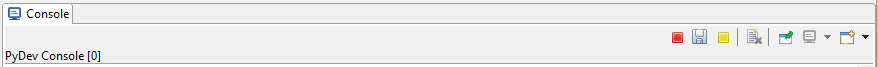
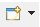
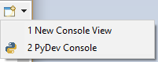
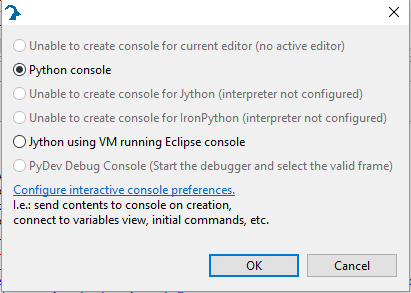
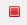
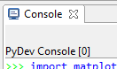
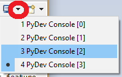
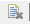
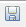

Scripting View
The Scripting-View displays a Python console, allowing you to load and execute Python or genie_python scripts. Note: Scripts running in the Scripting View are independent of scripts running on the Script Server and independent of scripts running in other consoles and clients.
This window should be used for:
Quick functionality, e.g. set the jaws up for a number of runs
Running visualisation and plotting routines
Developing scripts.
Experimental runs should, where possible, be run on the script server because these are independent of the client and only one script sever script can run at any one time (you can still run console scripts when the script server script is running).
Multiple Consoles and Views
The IBEX Gui supports both multiple consoles and multiple views on those consoles. This is not as user-friendly as it could be but is inherited from an open source component that we use. You should think of this as multiple versions of genie_python, each running in a console, which you can view through one or many windows. To see how to utilise this read the following toolbar section.
Tool Bar
The tools bar at the top of every python console view looks like:
This has multiple functions, from left to right:
Stop genie_python console
Save python console output
Stop execution
Clear the console
Pin console: does nothing
Change console being viewed in a console view
New console (genie_python console or console view)
New genie_python console
To start a new genie_python click on the add console button:
this will open a drop-down:
choose PyDev console which opens the pop-up:
Choose Python console from this pop-up and then OK. Note: At this point all open console views will switch to viewing the new console.
New console view
To create a new view on a console click on the add console button:
this will open a drop-down:
choose New Console View.
Stop genie_python console
To stop a genie_python console click on the stop button (red left most square):
Close Console View
All but the last view can be closed using the cross on the tab.
Stop execution
Execution of python can be stopped by pressing <ctrl> + c or clicking on the interrupt button (yellow right most square)
Change console being viewed in a console view
To select which console to view click on the console drop-down arrow (clicking on the icon cycles through consoles).
This will give you a list of active consoles running in this client. Select the one you wish to view.
Clear the console
A console can be cleared by clicking on clear console button:
Save python console output
All the commands and outputs from a python console can be saved to a file using the save console view button:
